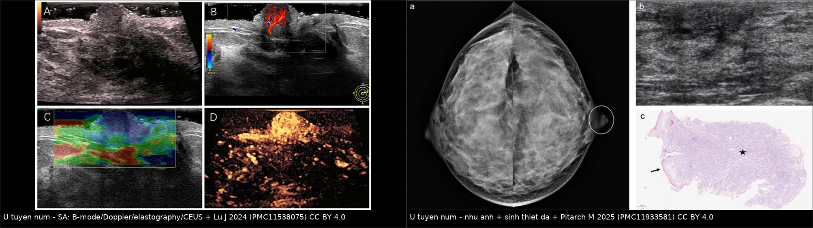
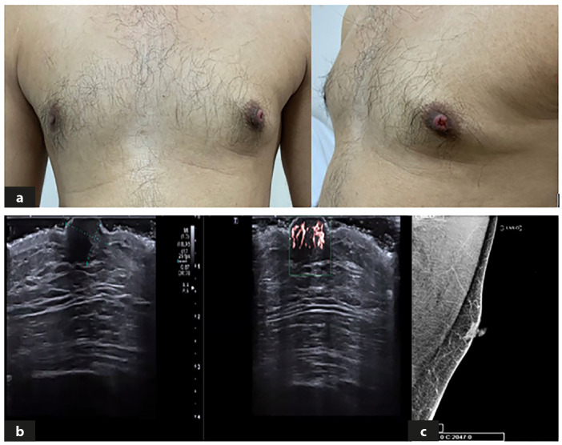
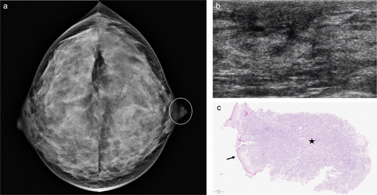
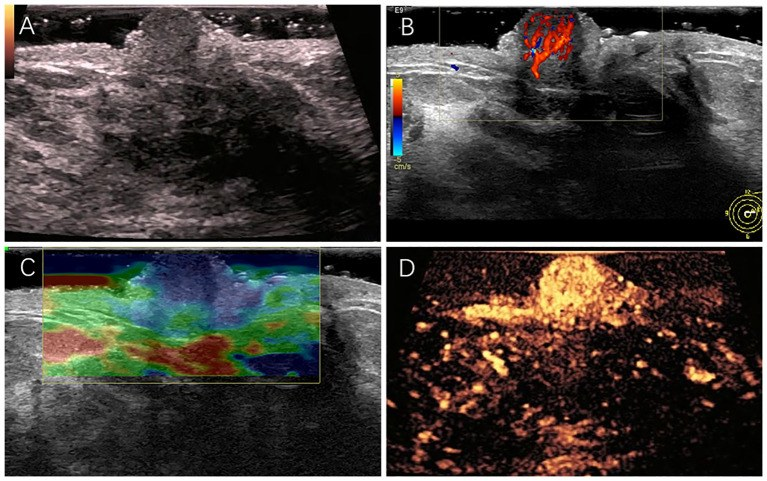
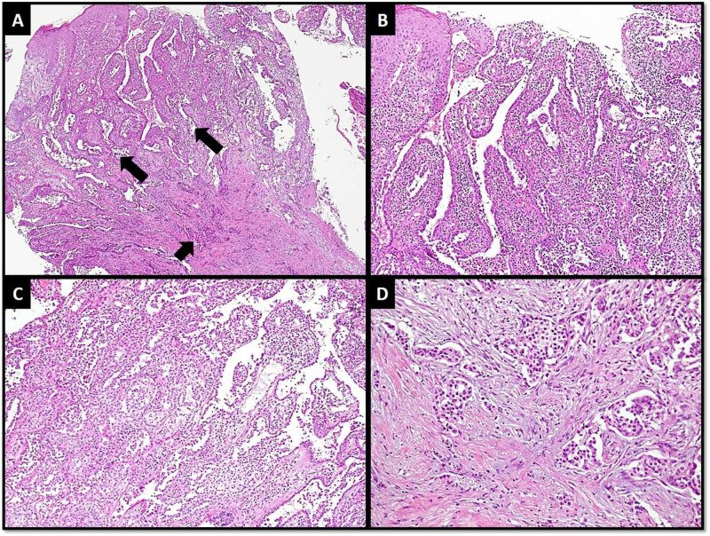

1692 — U tuyến núm vú và erosive adenomatosis của núm / Nipple adenoma (florid papillomatosis, erosive adenomatosis of the nipple)
Tags: pattern:trot-num-vu pattern:not-trong-num pattern:chay-dich-num pattern:day-num pattern:hong-da-num vung:vu vung:num-vu score:BI-RADS protocol:sieu-am-tan-so-cao protocol:nhu-anh-phong-dai protocol:sinh-thiet-da-punch incidentaloma:ton-thuong-num-vu
Mức chắc chắn (certainty): tổng hợp y văn (literature synthesis) — số liệu đọc trực tiếp từ toàn văn: tổng quan hệ thống 387 ca (Plast Reconstr Surg Glob Open 2024, PMC11124597), tổng quan hình ảnh chảy dịch núm (Insights Imaging 2025, PMC11933581), ca đa phương thức (Front Oncol 2024, PMC11538075), loạt nam giới + ung thư xâm lấn (Turk J Surg 2025, PMC12687395), ung thư trong u tuyến núm (Cureus 2020, PMC7358932); có ca nguyên văn cho quiz.
1. Tổng quan bệnh học – cơ chế hình ảnh
- Bản chất: u tuyến núm (nipple adenoma, NA) là tăng sinh lành tính của các ống tuyến sữa NÔNG nằm ngay trong núm — biểu mô ống + lớp tế bào cơ biểu mô (myoepithelial) còn nguyên vẹn, có/không tăng sinh biểu mô quanh ống góp. Các tên đồng nghĩa trong y văn — florid papillomatosis, erosive adenomatosis, subareolar papillomatosis, syringomatous adenoma (thực thể sau là biến thể hiếm, xâm lấn tại chỗ) — chính là lý do một tổn thương "trợt núm" có thể mang 4–5 tên trong 4 bài báo khác nhau.
- Vì sao quan trọng hơn một "nốt lành": NA bắt chước Paget số 1 (trợt + rỉ dịch + đóng vảy một bên) và đồng thời có thể chứa ung thư: trong 387 ca hệ thống, 40 ca (10,34%) có đồng chẩn đoán ác tính/tiền ác tính, trong đó ung thư biểu mô ống xâm lấn (IDC) 21 ca (5,43%), DCIS 4 (1,03%), ung thư thể hủy (metaplastic) 3 (0,78%), LCIS 3 (0,78%), ILC 2 (0,52%), Paget 1 (0,26%).
- Dịch tễ (định lượng): tỷ lệ mắc 0,0025%/năm, 0,45% các tổn thương vú lành tính, < 1% mẫu bệnh phẩm vú; một đơn vị giải phẫu bệnh gặp ~1 ca/năm; tuổi trung bình 44 (y văn 36–47), đa số nữ; < 5% ở nam. Thời gian từ triệu chứng đến chẩn đoán trung bình 24 tháng (nhóm chỉ NA 25,84 tháng, nhóm có đồng chẩn đoán 33,36 tháng) — nghĩa là hai năm "chung sống" với tổn thương mới được chẩn đoán đúng.
- Triệu chứng: khối/nốt/tăng thể tích núm 35,4% (nhóm có đồng chẩn đoán 80% vs 41,76%); trợt + chảy dịch tới 83%; khám: sẩn/nốt 37,54%, trợt–loét–vảy, co kéo núm.
- TẠI SAO hình ảnh khó và vì sao siêu âm là chốt (vật lý): tổn thương nằm trong núm, cách da 0–10 mm, kích thước thường ≤ 10 mm — dưới ngưỡng không gian của nhũ ảnh thường quy và nằm trong vùng có mô tuyến dày đặc cộng hưởng. Siêu âm đầu dò thẳng 12–18 MHz cho trục ngang 0,1–0,2 mm, nên thấy được cả ống tuyến giãn 2,2 mm có chất đặc bên trong. Cấu trúc là tăng sinh tuyến + xơ đệm → giảm âm đồng nhất, không có bóng lưng (khác ung thư xâm lấn), mạch máu tăng rõ trên Doppler (viêm + tăng sinh), đàn hồi cứng hơn mô mỡ quanh (xơ đệm), và ngấm mạnh, bờ ngấm rõ trên CEUS.
- Vì sao nhũ ảnh hay "âm tính": dấu hiệu duy nhất thường chỉ là núm to ra/bất đối xứng, dày da–quầng khu trú hoặc khối nông trong núm; muốn thấy phải chụp núm ở tư thế nghiêng (nipple in profile) ± phóng đại. Trong 387 ca, chỉ 16,8% được chụp nhũ ảnh, 23,51% siêu âm, 5,17% MRI — tức phần lớn ca được sinh thiết da thẳng mà không qua hình ảnh.
2. Mẫu hình + chẩn đoán phân biệt theo vị trí (Gamut)
- Khuôn 1 — Trợt/loét núm MỘT bên + rỉ dịch + đóng vảy, kéo dài nhiều tháng. Gamut: u tuyến núm (NA) vs bệnh Paget vs ung thư biểu mô vảy của núm vs chàm/Darier vs ung thư tế bào đáy vs di căn da. Chốt: Paget có tế bào Paget (CK7+, p63−), NA không có tế bào Paget, p63/CK5/6 dương ở lớp cơ biểu mô.
- Khuôn 2 — Nốt trong núm, da trên còn nguyên, không chảy dịch. Gamut: NA vs nhú ống trong (intraductal papilloma) trung tâm vs u tuyến syringomatous vs giãn ống (duct ectasia) vs áp-xe sau quầng. Chốt: NA nằm trong chính núm, không có cuống ống dẫn về sau; papilloma trong ống giãn sau quầng.
- Khuôn 3 — Núm to nhanh, đỏ, đau, có khi chảy máu. Gamut: NA vs DCIS/Paget lan ra núm vs ung thư thể viêm (T4d) có da cam vs viêm mô tế bào. Chốt: NA giới hạn trong núm–quầng, không có da cam lan > 1/3 vú.
- Khuôn 4 — Nam giới, núm to + trợt. Gamut: NA (rất hiếm, < 5%) vs ung thư vú nam vs gynecomastia vs nang biểu bì. Không được "trấn an" chỉ vì nam giới: ca 41 tuổi dưới đây có NA trên sinh thiết punch nhưng ung thư xâm lấn ở sâu.
- Khuôn 5 — Tái phát nhiều lần sau cắt. Gamut: NA tái phát do diện cắt dương vs ung thư bị bỏ sót trong u vs u tuyến syringomatous (xâm lấn tại chỗ, tái phát cao hơn). Chốt: xem lại toàn bộ tiêu bản + p63, không chỉ cắt lại.
- Gợi nhớ "NIPPLE": Núm một bên · IHC bắt buộc (p63/CK5/6) · Punch biopsy (không FNA) · Paget là hàng DDx số 1 · Lành tính nhưng đồng chẩn đoán 10,3% · Excision có diện cắt âm.
3. Bảng so sánh phân biệt (ma trận đối chiếu)
| Thực thể (entity) | Hình ảnh điển hình (SA / nhũ ảnh / MRI) | Chốt vào (rule-in) | Chốt loại (rule-out) | Gợi ý xác nhận |
|---|---|---|---|---|
| U tuyến núm (NA) | SA 12–18 MHz: khối giảm âm đồng nhất TRONG núm, mạch máu tăng, ± ống giãn chứa chất đặc, không bóng lưng; đàn hồi cứng hơn; CEUS ngấm mạnh bờ rõ. Nhũ ảnh: núm to/bất đối xứng, dày da–quầng, hoặc khối nông trong núm | Tổn thương khu trú đúng trong núm + p63/CK5/6 dương (cơ biểu mô còn) | Tế bào Paget (CK7+, p63−) → không phải NA; xâm lấn qua màng đáy → không phải NA đơn thuần | Sinh thiết punch 3–6 mm đúng vùng trợt + cắt trọn; đo kích thước trên SA |
| Bệnh Paget của núm | Nhũ ảnh: dày da–quầng, ± vi vôi hóa/khối DCIS phía sau; SA: dày da, không khối trong núm | Tế bào Paget lớn, bào tương sáng trong biểu bì, CK7+ / p63− | p63 dương ở lớp cơ biểu mô + không có tế bào Paget → NA | Punch da + IHC (bài 1690) |
| DCIS/Paget lan ra núm | Vi vôi hóa đa hình, xếp tuyến tính, có thể sau quầng; MRI non-mass enhancement | Vi vôi hóa ác tính hoặc NME + tế bào ác trong ống | Không vi vôi hóa, tổn thương giới hạn trong núm → nghĩ NA | Nhũ ảnh phóng đại + MRI + sinh thiết |
| Nhú ống trong (intraductal papilloma) | Ống giãn sau quầng, trong lòng có khối giảm âm có cuống, mạch máu trong cuống | Nằm trong ống dẫn, có cuống mạch, chảy dịch một ống | Nằm trong chính núm, không cuống → NA | SA + cắt ống dẫn/soi ống dẫn |
| U tuyến syringomatous | Khối giảm âm bờ không rõ, có thể xâm lấn mô mỡ sau quầng | Nang sừng + ống nhỏ xâm lấn đệm, p63 dương nhưng cấu trúc xâm lấn | Cấu trúc ống tròn đều, giới hạn rõ → NA điển hình | Cắt trọn + mô bệnh học; tái phát cao hơn NA |
| Ung thư biểu mô vảy / tế bào đáy của núm | Khối loét, bờ cứng, có thể vôi hóa/hủy xương nếu lan sâu | Tế bào vảy ác, keratin hóa, p63 dương lan tỏa mất cấu trúc ống | Cấu trúc ống + cơ biểu mô bao quanh → NA | Sinh thiết + IHC |
| Chàm / Darier / vảy phấn | Hai bên, đáp ứng corticoid, không khối | Đối xứng, ngứa, thay đổi theo mùa | Một bên + khối/nốt cố định → phải sinh thiết | Lâm sàng + sinh thiết nếu không đáp ứng |
| Ung thư trong NA (NA + IDC) | Như NA trên hình ảnh; không phân biệt được bằng SA | Mô bệnh: ổ xâm lấn mất p63 + mất CK5/6 | Không thể loại bằng hình ảnh | Cắt trọn, cắt lạnh diện cắt, không chỉ punch |

*Trái: siêu âm đa phương thức — (A) khối giảm âm 8 × 6 mm trong núm trái, (B) mạch máu phong phú, (C) đàn hồi cứng hơn mô quanh, (D) CEUS ngấm mạnh, bờ ngấm rõ. Phải: nhũ ảnh hai vú (a, vòng tròn: núm trái to/bất đối xứng), (b) siêu âm không thấy ổ khu trú, (c) sinh thiết punch: biểu bì còn nguyên (mũi tên) + tăng sinh tuyến đặc, lớp cơ biểu mô còn (sao). Nguồn: Lu J và cs., Front Oncol 2024, Fig. 1 (CC BY 4.0); Pitarch M và cs., Insights Imaging 2025, Fig. 7 (CC BY 4.0).*4. Protocol chụp + phân độ BI-RADS + xử trí
Khi bệnh nhân có trợt/nốt/chảy dịch ở MỘT núm:
- Siêu âm đầu dò thẳng 12–18 MHz là bước đầu — đặt đầu dò trực tiếp lên núm (không cần gel dày), quét dọc trục ống và cắt ngang, so sánh hai bên. Ghi: kích thước (mm), vị trí trong núm / sau quầng, bờ, mạch máu, có ống giãn, khoảng cách tới da.
- Nhũ ảnh chẩn đoán hai bên + phim núm nghiêng (nipple in profile) ± phóng đại 1,5–2×. Đừng chấp nhận "nhũ ảnh bình thường" khi núm bất đối xứng — dấu hiệu chỉ là núm to ra.
- MRI vú không thường quy; dùng khi nhũ ảnh/SA nghi ngờ lan rộng, hoặc có NME cần đối chiếu.
- Sinh thiết: punch da 3–6 mm đúng vùng trợt/loét (không FNA, không chỉ chải tế bào) + cắt trọn tổn thương để có diện cắt âm. Với tổn thương trong núm, cắt lạnh (frozen section) diện cắt giúp phát hiện ổ xâm lấn sâu.
- BI-RADS: trước mô bệnh, khối đặc trong núm → BI-RADS 4 (không được 2 chỉ vì "nghĩ lành"); sau khi có mô bệnh NA + hình ảnh phù hợp → hạ BI-RADS 2 và theo dõi.
- Xử trí: cắt trọn có diện cắt âm là đủ; các lựa chọn ít xâm lấn đã báo cáo: Mohs, áp lạnh, PDT 5-ALA (chỉ ở nhóm NA đơn thuần). Không mổ rộng/đoạn tuyến "phòng xa" vì tái phát chỉ 2,87% và không có bằng chứng NA là tổn thương tiền ung.
- Theo dõi: khám lại 6–12 tháng trong năm đầu; nhóm có đồng chẩn đoán theo dõi như bệnh nền. Số liệu: 279/387 ca (72,09%) có theo dõi, trung bình 56,73 ± 28,2 tháng (0,5–283); biến cố 13/279 (4,66%): tái phát 8 (2,87%) — 4 sau cắt, 4 sau chỉ sinh thiết (p = 0,035) — và 5 ca (1,79%) phát triển ung thư, tất cả nằm trong nhóm có đồng chẩn đoán.
flowchart TD
A[Trot, not hoac chay dich MOT num] --> B[Sieu am 12-18 MHz + nhu anh num nghieng]
B --> C{Khoi dac trong num?}
C -->|Co| D[BI-RADS 4: sinh thiet punch 3-6 mm]
C -->|Khong, chi day da| D2[Sinh thiet da vung trot]
D --> E{Mo benh}
D2 --> E
E -->|p63 va CK5/6 duong, khong te bao Paget| F[U tuyen num]
E -->|Te bao Paget CK7 duong p63 am| G[Benh Paget: xu tri theo DCIS]
E -->|Xam lan mat p63| H[Ung thu: xu tri theo giai doan]
F --> I[Cat tron co dien cat am + cat lanh]
I --> J{Co dong chan doan?}
J -->|Co| K[Theo doi theo benh nen, kham 6-12 thang]
J -->|Khong| L[Theo doi 6-12 thang, tai phat 2,87%]

*(a) Nam 41 tuổi: núm trái to, đỏ, trợt, rỉ dịch trong 9 tháng; (b) siêu âm: núm 6 × 9 mm, ống giãn 2,2 mm có chất đặc bên trong; (c) nhũ ảnh: chỉ thấy vùng đậm khu trú trong núm. Sinh thiết punch = NA (CK5/6+, p63+, Ki-67 10%), nhưng cắt lạnh diện cắt phát hiện ung thư xâm lấn 0,6 × 0,5 × 0,4 cm (pT1b pN0). Nguồn: Güzelyüz B và cs., Turk J Surg 2025, Fig. 1 (CC BY-NC 4.0).*5. Biến thể bình thường và cạm bẫy
- Núm bình thường trên siêu âm KHÔNG phải "khối giảm âm": mô tuyến trong núm đã giảm âm sẵn; chỉ gọi bất thường khi mất cấu trúc ống đều, có khối tròn/không đồng nhất, mạch máu tập trung, hoặc ống giãn có chất đặc. So sánh hai bên cùng độ sâu là bắt buộc.
- Tuyến Montgomery quanh quầng tạo sẩn nhỏ đối xứng — không phải nốt u; chỉ sinh thiết khi một bên, to nhanh, loét.
- CẠM BẪY SỐ 1 — punch biopsy "lành" không loại trừ ung thư ở sâu: ca nam 41 tuổi có NA đúng trên punch, nhưng ung thư xâm lấn nằm dưới; vì vậy tổn thương trong núm phải cắt trọn ± cắt lạnh, không dừng ở punch.
- NA không phải tổn thương tiền ung nhưng đồng chẩn đoán 10,34% và tăng theo tuổi (hồi quy logistic: estimate 0,0398; P = 0,014) — tuổi càng cao càng phải cắt trọn và đọc kỹ.
- Dấu hiệu "đỏ" của NA không phải viêm: trợt + rỉ dịch + đóng vảy kéo dài vài tháng, không sốt, không đau tăng — nếu có sốt/áp-xe, nghĩ nhiễm và dẫn lưu trước.
- Tăng thể tích do hormone: có ca NA to lên rõ sau liệu pháp estrogen và ca tiến triển trong thai kỳ — không mặc định "to lên = ung thư", nhưng vẫn phải đánh giá mô bệnh.
- Đừng chấm BI-RADS 2 cho "nốt nhỏ trong núm" khi chưa có mô bệnh; ngược lại, đừng mổ đoạn tuyến khi đã có NA + hình ảnh phù hợp — hậu quả thẩm mỹ lớn hơn lợi ích.
- Sai lầm thỏa mãn tìm kiếm (satisfaction of search): thấy NA rồi bỏ qua ổ vi vôi hóa/NME ở phần tuyến phía sau — luôn đọc toàn bộ nhũ ảnh + MRI nếu có.
6. Tự lượng giá — Blind Quiz
Ca 1 — Nữ 33 tuổi, chảy máu đầu núm trái + đau, đỏ, sưng núm 3 tháng.

- Hỏi: dấu hiệu chính trên nhũ ảnh? Siêu âm "không thấy ổ khu trú" có loại trừ tổn thương? Bước tiếp theo?
Bấm để hiện đáp án (findings + chẩn đoán)
- Dấu hiệu: (a) nhũ ảnh: núm trái to và bất đối xứng (vòng tròn) — không có khối/vi vôi hóa trong tuyến; (b) siêu âm: không thấy ổ khu trú trong núm; (c) sinh thiết punch: biểu bì còn nguyên (mũi tên), bên dưới tăng sinh tuyến đặc với lớp cơ biểu mô còn (sao).
- Chẩn đoán: u tuyến núm — chẩn đoán bằng mô bệnh học, không bằng hình ảnh.
- Vì sao: tổn thương nằm trong núm, dưới ngưỡng nhũ ảnh; "siêu âm âm tính" chỉ có nghĩa không có khối đặc, còn tăng sinh tuyến có thể đồng âm với mô núm. Điều trị: cắt trọn có diện cắt âm.
- Nguồn ảnh: Pitarch M và cs., Insights Imaging 2025, Fig. 7 (CC BY 4.0).
Ca 2 — Nữ 45 tuổi, nốt 8 × 6 mm trong núm trái, không chảy dịch.

- Hỏi: mô tả 4 chế độ siêu âm? Chẩn đoán phân biệt 3 khả năng? Dấu hiệu nào không giúp loại ung thư?
Bấm để hiện đáp án
- Dấu hiệu: (A) khối giảm âm 8 × 6 mm trong núm trái; (B) mạch máu phong phú trong khối; (C) đàn hồi cứng hơn mô quanh (xanh); (D) CEUS ngấm mạnh, bờ ngấm rõ.
- Chẩn đoán: u tuyến núm (mô bệnh: tăng sinh nhú + CK5/6, p63 dương ở lớp cơ biểu mô).
- Vì sao: NA là tăng sinh tuyến + xơ đệm nên giảm âm, tăng sinh mạch, cứng, ngấm mạnh — cả 4 dấu hiệu này đều dương ở ung thư, nên không dấu hiệu nào loại trừ được ung thư. Chỉ p63/CK5/6 còn nguyên mới chốt lành tính.
- Nguồn ảnh: Lu J và cs., Front Oncol 2024, Fig. 1 (CC BY 4.0).
Ca 3 — Nam 41 tuổi, núm trái đỏ–trợt–rỉ dịch 9 tháng; punch = u tuyến núm.
- Hỏi: có được dừng ở chẩn đoán "u tuyến núm lành tính" và theo dõi? Vì sao?
Bấm để hiện đáp án
- Dấu hiệu: (a) núm trái to, đỏ, trợt, rỉ dịch; (b) siêu âm: núm 6 × 9 mm, ống giãn 2,2 mm chứa chất đặc, có mạch máu; (c) nhũ ảnh: vùng đậm khu trú trong núm, không tổn thương tuyến khác.
- Chẩn đoán: u tuyến núm + ung thư biểu mô ống xâm lấn (0,6 × 0,5 × 0,4 cm; pT1b pN0, độ 1, ER 70%, HER2 0, Ki-67 20%) — phát hiện nhờ cắt lạnh diện cắt sau khi punch chỉ ra NA.
- Vì sao: NA không loại trừ ung thư đi kèm (10,34% đồng chẩn đoán, IDC 5,43%); tổn thương trong núm phải cắt trọn + cắt lạnh, đặc biệt khi núm to, có ống giãn, nam giới.
- Ghi chú phản biện: đây là ca hiếm (nam giới + ung thư trong NA) — không suy ra "mọi NA đều có ung thư", nhưng đúng là lý do không theo dõi đơn thuần.
- Nguồn ảnh: Güzelyüz B và cs., Turk J Surg 2025, Fig. 1 (CC BY-NC 4.0).
Ảnh mô bệnh tham chiếu:

(A) NA ở nông (mũi tên dài) và ung thư xâm lấn ở sâu (mũi tên ngắn); (B) hình nhú; (C) tăng sinh; (D) ổ xâm lấn. Nguồn: Abdulwaasey M và cs., Cureus 2020, Fig. 1 (CC BY 4.0).Bài liên quan chéo
- 1690 – Bệnh Paget của núm vú
- 1691 – Bệnh Mondor: huyết khối tĩnh mạch nông vú – thành ngực
- 510 – BI-RADS: nhũ ảnh, siêu âm, MRI
- 1613 – Viêm tuyến vú u hạt & áp-xe vú
- 1616 – Ung thư vú thể viêm (T4d)
- 1618 – Di căn da & thành ngực của ung thư vú
Không dùng để chẩn đoán độc lập khi chưa có người hướng dẫn.